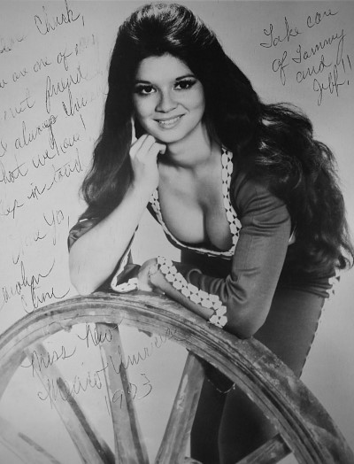

Carolyn Cline - Media
Videos
58th Annual Miss America Pageant TV Special
Carolyn Cline (Miss Florida 1978) - Piano/Vocal, "Love Story"
Music
Crazy
I Fall To Pieces
Sweet Dreams
Photos

|
|
|
This photo was used as the cover for my CD, 'A Tribute to Patsy Cline'. |
|
|

This is the publicity photo from my time as Miss New Mexico Universe in 1973. |